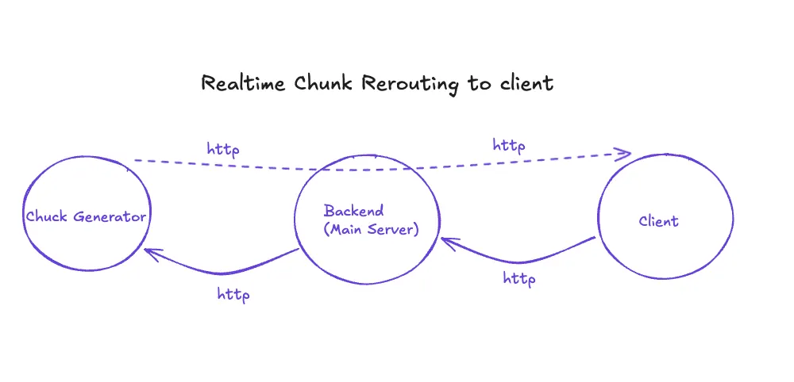
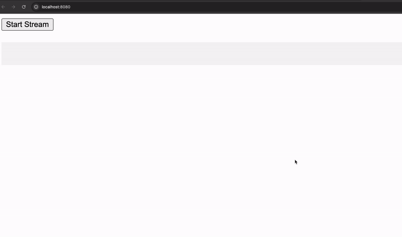

Forwarding Streaming Response in Real-Time
Backstory
The first time I worked with LLMs in my small projects, I faced an issue where my backend sent the LLM's response only after it was fully generated. This made my projects feel slow and unresponsive. I tried figuring out how to stream packets to the client-side in real-time but struggled to find idiomatic resources. So I am attempting to write one.
What is Streaming Response ?
On a network level, streaming response is just a HTTP/1.1 response. Yes, not web-sockets or RPC.

Lets implement one in Go …
ChunkMaker Implementation
// Handler function that binds to url: http://localhost:8081/generate
func generateHandler(w http.ResponseWriter, r *http.Request) {
w.Header().Set("Content-Type", "text/plain")
w.Header().Set("Transfer-Encoding", "chunked")
// flushes the http.ResponseWriter
flusher, _:= w.(http.Flusher)
// chunks are generated here.
for i := 1; i <= 100; i++ {
// Stores the Chunk number and Time as a string
chunk := fmt.Sprintf("Chunk %d [%s]\n", i, time.Now().Format("15:04:05.000"))
// writes the string as a response
_, _:= w.Write([]byte(chunk))
// Flushes the Response to the User
flusher.Flush()
// Simulates a slow Stream on chunks
time.Sleep(time.Millisecond * 100) // 10 chunks per second
}
}Use relevant headers for streaming chunked data. It is good manners to let the users of our service know what they are going to receive.
Now that we know how to create our very own streaming response, lets look into it from a perspective of someone who just uses this service to deliver to their clients.
Forwarding Server Implementation
func proxyHandler(w http.ResponseWriter, r *http.Request) {
// Request the chunks from the generator
resp, err := http.Get("http://localhost:8081/generate")
w.Header().Set("Content-Type", "text/plain")
w.Header().Set("Transfer-Encoding", "chunked")
// get flusher here ( as we are also streaming the reponse from the generator )
flusher, _:= w.(http.Flusher)
buf := make([]byte, 1024)
for {
// Copy the Response Chunk into a variable
n, err := resp.Body.Read(buf)
//stop streaming at the End
if err == io.EOF { break }
// Stream The Response
if n > 0 {
_, _ := w.Write(buf[:n])
flusher.Flush()
}
}
}This code doesn't handle errors to make it look cleaner.
The source files are available at: github.com/kirtansoni/streaming-in-http
Lets look at the final result:

Works.
I hope that helped.
Thank you for reading!